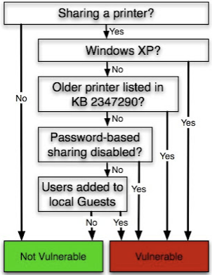

The Stuxnet Worm embedded 4 different 0-days, one was vulnerability MS10-061 in Windows Printer Spooler.
Basically, this vulnerability permits to remotely execute code with SYSTEM privilege on a Windows XP machine if a printer is shared on the network. It was patched by Microsoft on September 2010. The other versions of Windows are vulnerable, but only when really particular conditions are met

Actually, when a printer is shared on the network on Windows XP, it's reachable by anybody as the Guest user in order to print documents. The "printer spooler service" which is locally responsible for handling the requests from the client is the spoolsv.exe process. It's possible to remotely talk with it by using the RPC protocol (Remote Procedure Call). Stuxnet simply uses the methods implemented by the service to ask it to write a file on the disk of the machine.